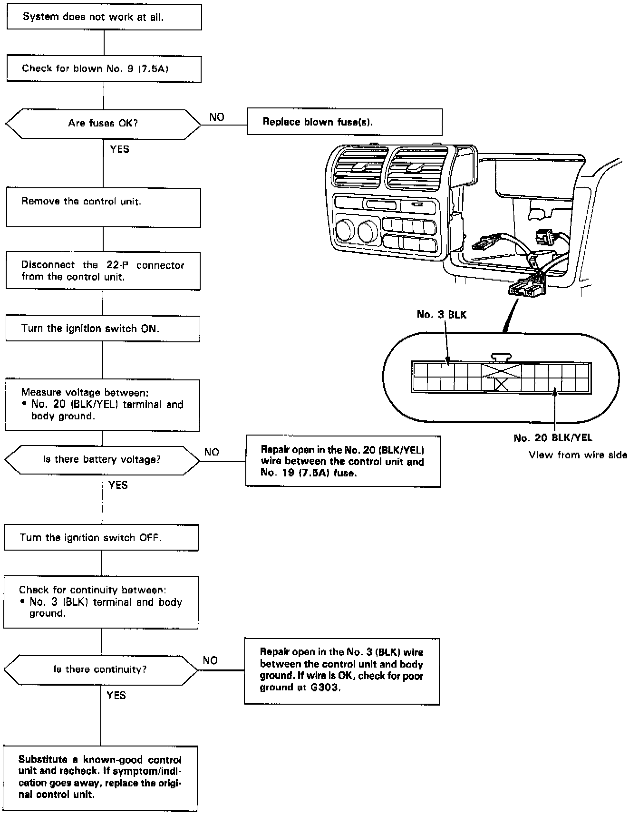

Operation CHARM
: Car repair manuals for everyone.
Home
>>
Acura
>>
1992
>>
Legend Sedan V6-3206cc 3.2L SOHC FI
>>
Repair and Diagnosis
>>
Heating and Air Conditioning
>>
Testing and Inspection
>>
Component Tests and General Diagnostics
>>
Non-Trouble Code Procedures
>>
Power Circuits to A/C Control Unit
Power Circuits to A/C Control Unit
Power Circuits To A/C Control Unit:
